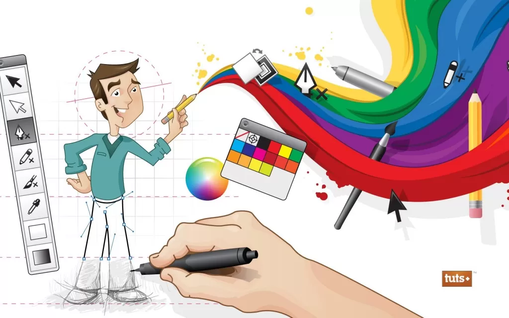

Informatica
O curso técnico em Informática prepara o aluno para atuar em duas áreas principais: Hardware e Software. Em Hardware, o aluno aprenderá sobre montagem e manutenção de microcomputadores e gestão de redes. Em Software, o foco será no desenvolvimento de sistemas e programas, além de interagir com banco de dados por meio de linguagens de programação.
Ferramentas
- html
- css
- javascript
- Mysql
Comunicação Visual
O curso capacita o aluno para atuar no desenvolvimento de projetos gráficos, criação de peças publicitárias, marketing digital, fotografia e edição de vídeo. O profissional será preparado para trabalhar na criação de conteúdo visual criativo, como anúncios e campanhas de marketing, além de gerir redes sociais, promovendo a comunicação entre empresas e seus públicos.
Ferramentas
- pothoshop
- illustrator
- indesign
- corel drawn

Administração
O curso capacita o aluno para atuar no apoio administrativo em diversas áreas, como controle de estoques, gestão de recursos humanos, logística, marketing e operações contábeis. Exige visão sistêmica, boa comunicação e ética.
Ferramentas